Édition anniversaireMercredi 11 novembre 2026Prix : un sourire
Les nouvelles extraordinaires d’une famille tout à fait remarquable
Le grand concours des tatasHélène × CindyLe duel familial · Bulletin en page 2Candidate n° 1Hélène ouvre la première manche.Candidate n° 2Cindy lui donne la réplique.Bulletin familialLe jury a un an : il se réserve le droit de ne pas trancher.
ExclusifUn événement attendu dans toute la famille
ABEL A UN AN !
Né le 11 novembre 2025, le jeune sorcier souffle sa première bougie. Sa famille confirme : son sourire fait déjà des merveilles.
Portrait du jour
Un an de magie ordinaire
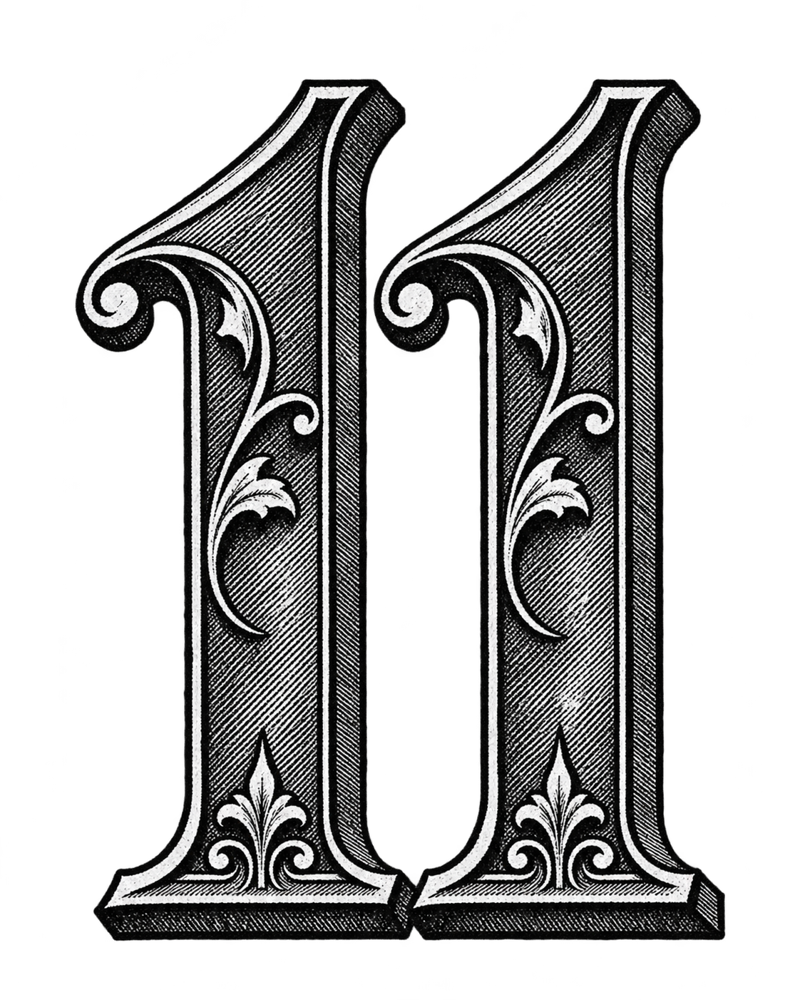
Abel est né le 11 novembre 2025 et, du même coup, Élie est devenu grand frère : une promotion sans décret qui change toute une maison. Le benjamin annonce déjà sa présence d’une voix qui porte ; ses yeux bleus ouvrent une enquête que la Gazette n’ose clore. Damien et Yvonne, son arrière-arrière-grand-mère paternelle, y ont laissé leur éclat ; Nathalie, dite Manie, sa grand-mère maternelle, en offre l’écho. Parfois, la nouvelle la plus importante tient au coin d’une bouche : Abel sourit, et la Gazette oublie ses questions.
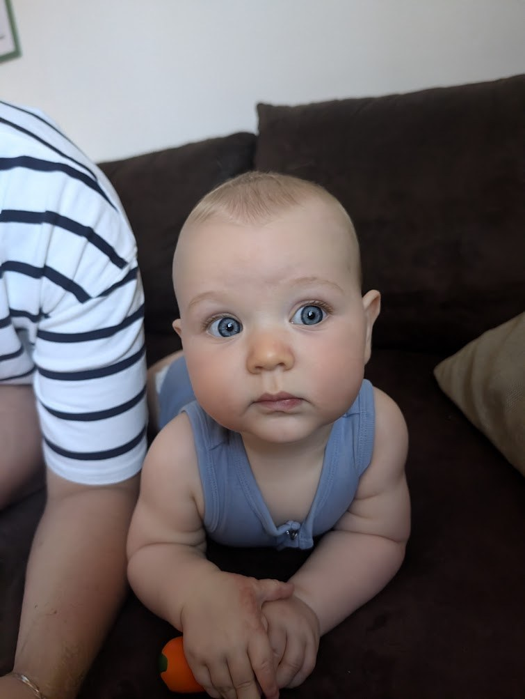
Abel, juillet 2026. La Gazette a retrouvé le propriétaire de ces yeux bleus.Portrait exclusif
Le clan des quatre
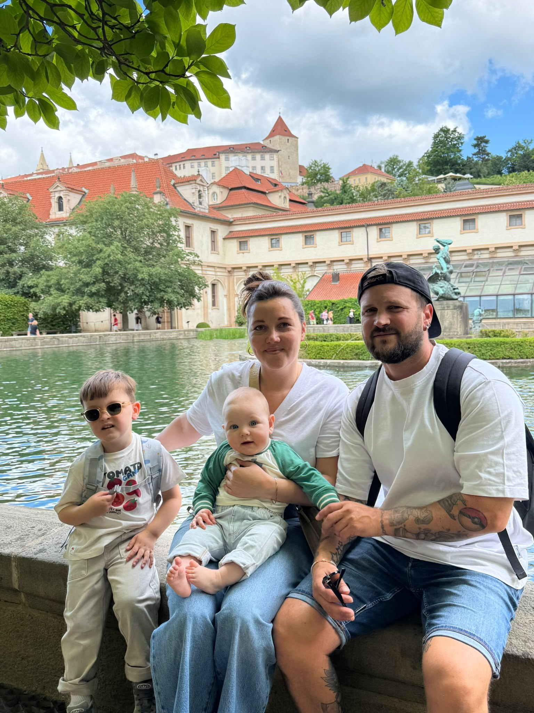
Élie, Marine, Abel et Damien réunis au bord de l’eau.
Sur ce cliché de famille, Marine tient Abel entre Élie et Damien. La première année du benjamin s’écrit déjà à plusieurs voix.
Lire notre grand reportage en page 2.
Un sourire,et toute la maison s’illumine.
Le regard bleu
Le bleu des yeux d’Abel a mis la rédaction sur deux pistes. Du côté de Damien, il rappelle le regard d’Yvonne, son arrière-arrière-grand-mère ; du côté de Marine, celui de Nathalie, dite Manie. Deux branches, un même éclat : le dossier se poursuit en page 4.
La voix porte
Abel n’a pas encore livré son premier discours, mais sa voix porte déjà. La Gazette tend l’oreille, puis voit apparaître son sourire facile : deux façons bien à lui d’annoncer sa présence. Le vocabulaire viendra ; l’essentiel est déjà compris.
Un premier anniversaire
Le 11 novembre 2026, Abel fête sa première année. Marine et Damien voient grandir deux garçons, et Élie exerce depuis un an sa fonction de grand frère. Onze pages célèbrent cette première bougie ; la Gazette ouvre déjà les archives de l’an deux.
Photo de l’année
Abel avec un livre.
Une piste londonienne
Londres, premier indice
Avant l’arrivée d’Abel, Marine et Damien ont suivi une piste jusqu’à Londres : les studios Harry Potter. Aucun cliché de cette escapade n’a rejoint nos archives. Faut-il y chercher le premier indice de cette histoire ? La Gazette laisse aux parents le soin de répondre.
Les dates du dossier
Cinq dates sous la loupe
11 nov. 2025 · Abel fait son entrée.
Février 2026 · les quatre dans le cadre.
Mai 2026 · sourire au bord de la mer.
Juillet 2026 · les yeux bleus livrent leur indice.
11 nov. 2026 · première bougie, dossier ouvert.
Dans ce numéro
À suivre
2 Le clan d’Abel
3 Tristan recherché
4–5 Enquêtes et souvenirs
6 La bande du filet
7–8 Charlotte et Tristan avec Abel
9 Le premier cercle
10 La tapisserie d’Abel
11 La Carte du Maraudeur
Notre service du courrier veille sur cette édition.
Affaires familiales 11 novembre 2026 · Page 2
Grand reportage · Généalogie et liens choisis
Le clan d’Abel
Parents, frère, parrain, marraine, oncles, tatas et cousin : notre guide pour ne confondre personne sur les photographies de famille.
Le premier cercle
Marine, Damien, Élie, Abel
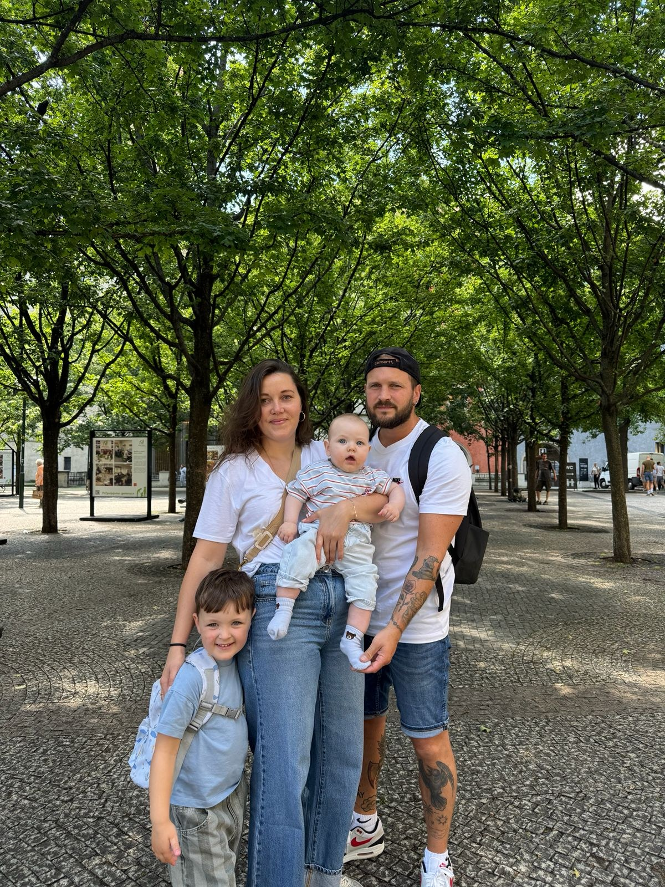
Les quatre réunis sous les arbres.
Marine et Damien sont les parents d’Abel. À leurs côtés, Élie prend ses fonctions de grand frère. Sur cette photo, Marine porte Abel tandis qu’Élie pose près d’elle et de Damien.
La Gazette a enquêté dans les archives. En février 2024, Élie fêtait déjà son propre premier anniversaire. Son petit frère inaugure cette année un nouveau chapitre familial.
Élie, l’aîné des archives
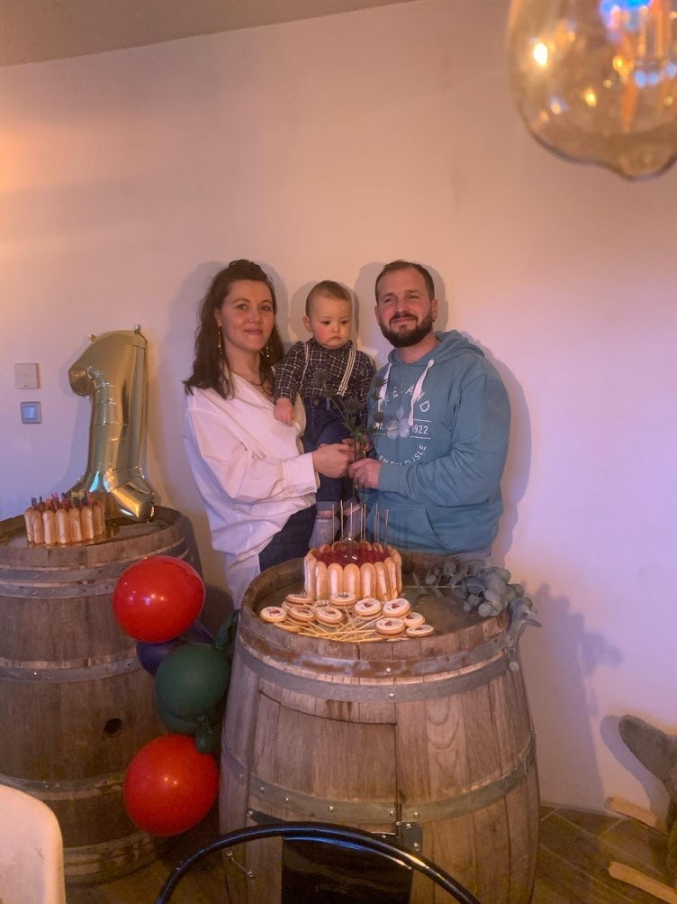
Élie, Marine et Damien autour du gâteau d’un an, février 2024.
Attention aux confusions : sur les photos antérieures au 11 novembre 2025, les bébés ne sont pas Abel. Cette archive appartient à l’histoire d’Élie.
Parrain et marraine d’Abel
Deux présences auprès d’Abel
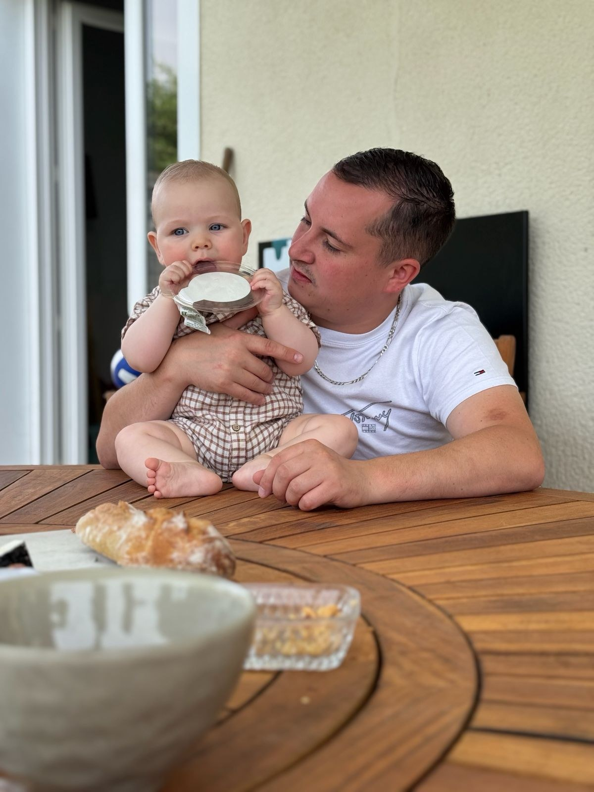
Abel avec son parrain Tristan, à table.
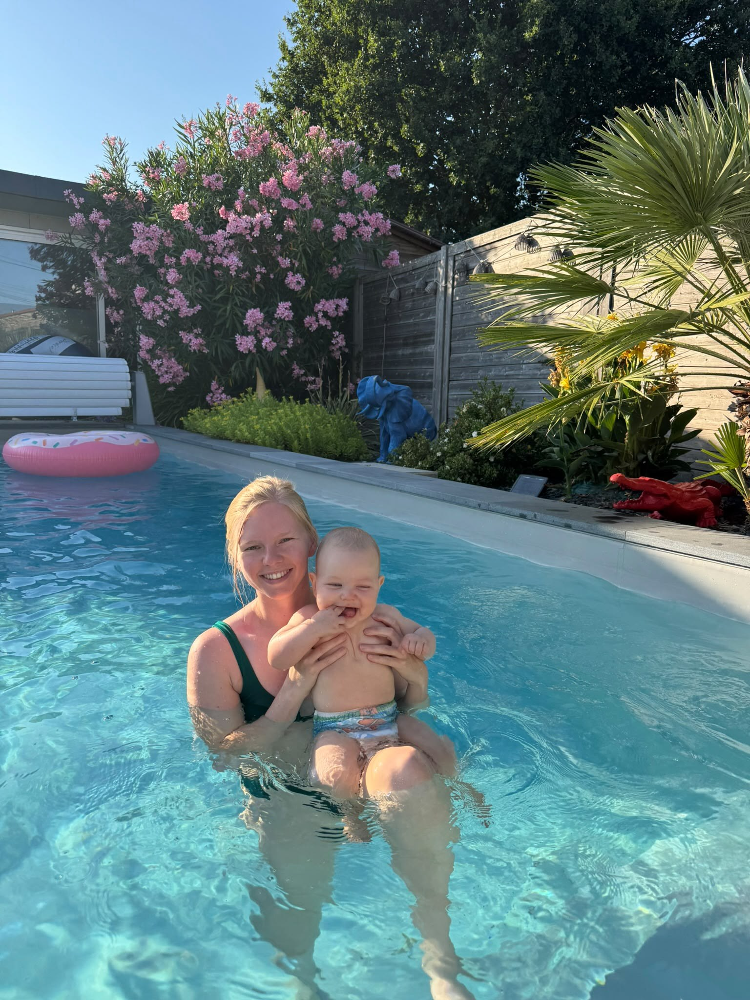
Abel avec sa marraine Charlotte, dans la piscine.
Tristan, son parrain, tient Abel près de lui à table, pendant que son filleul examine un petit couvercle. Charlotte, sa marraine, le serre dans ses bras à la piscine. Deux instants différents réunis ici autour d’Abel.
Trois frères sur une photo
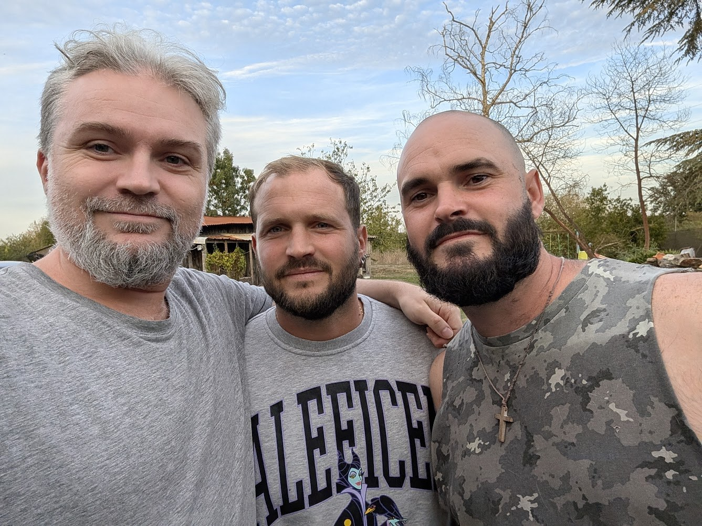
Yoann, Damien et Julien, septembre 2026.
Damien, Yoann et Julien sont frères. Julien est aussi le père de Justin, cousin d’Élie et d’Abel. Ce portrait à trois rappelle que l’histoire d’Abel s’inscrit dans une famille aux nombreuses ramifications.
Les tatas : Hélène et Cindy
Dans ce clan, les tatas ont aussi leur place. Hélène, sœur de Marine, est la marraine d’Élie. Cindy est la maman de Justin avec Julien ; Justin est le cousin d’Abel et d’Élie. On retrouve Cindy au premier plan d’une photo de famille en page 5.
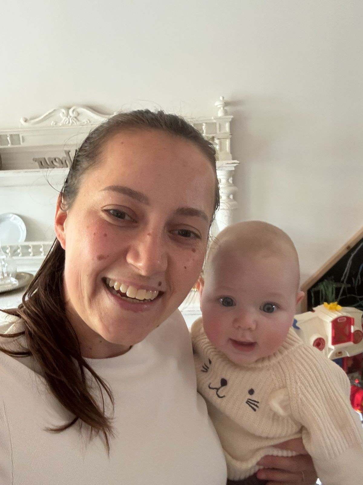
Hélène
Grand combat des tatas · Édition anniversaireLa tata préf’ d’Abel ?VSÀ cocher pour rire : Abel garde ses deux tatas.
Cindy
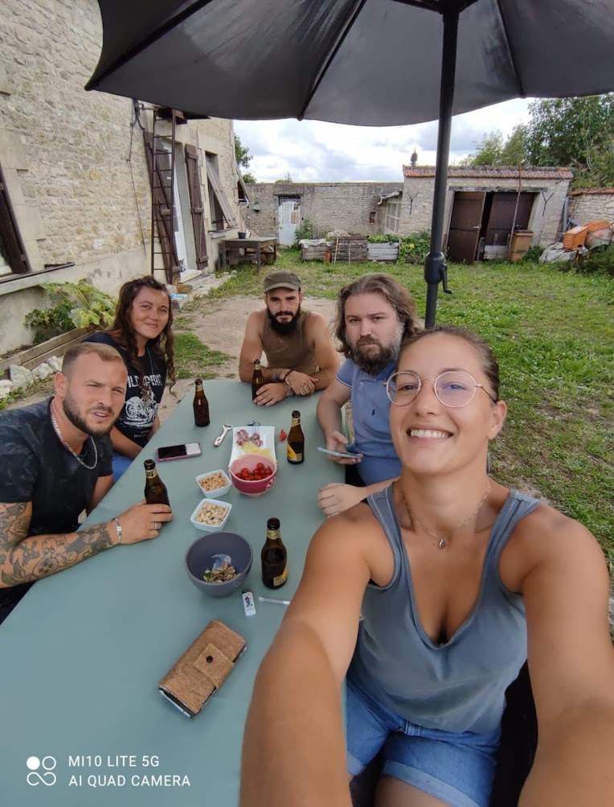
The Daily Prophet · Avis officiel · Édition familiale
Avez-vous vuce sorcier ?
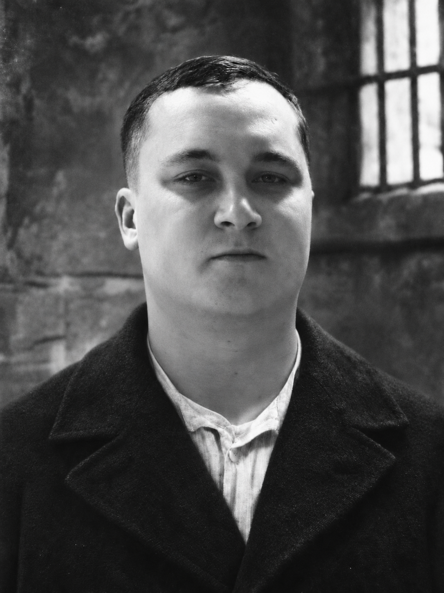
TristanParrain d’Abel · Dossier n° 0111
Approchez avec une extrême prudence !
Avis fictif : ce portrait voudrait faire passer Tristan pour un sorcier redoutable. Rectificatif familial : il est en réalité doux et gentil, et veille sur son filleul Abel. Récompense : un sourire d’Abel pour qui retrouvera son parrain.
Enquêtes & phénomènes 11 novembre 2026 · Page 4
Enquête spéciale · Sourire, voix et hérédité
Le mystère des yeux bleus
La Gazette suit trois indices : un regard de famille, une voix qui se fait entendre et un sourire qui revient vite.
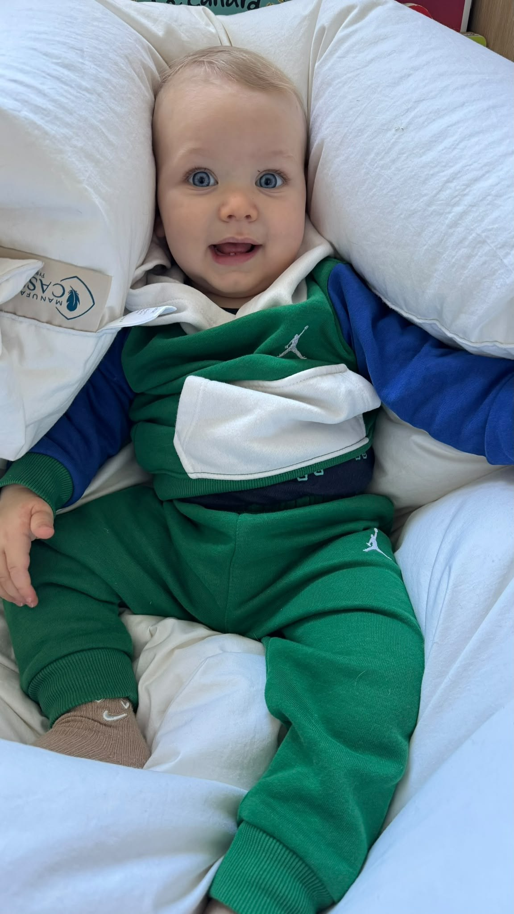
Abel souriant entre deux coussins : ses yeux bleus au cœur du dossier.Dossier n° 001
Le regard qui traverse les générations
Le constat est partagé par la famille : Abel a des yeux d’un bleu remarquable. Ils rappellent ceux de son père Damien et de son arrière-arrière-grand-mère paternelle Yvonne. Du côté de Marine, sa grand-mère maternelle Nathalie, surnommée Manie, porte elle aussi ce regard bleu. La Gazette tient donc deux pistes familiales. Aucun portrait d’Yvonne n’a rejoint nos archives pour cette édition, mais son nom figure en bonne place dans l’enquête.
De là à parler d’un héritage magique, il n’y a qu’un pas que la Gazette franchit volontiers. Les scientifiques, eux, réclameraient sans doute un peu plus de méthode. La famille préfère regarder Abel : l’argument se suffit à lui-même.
Deux branches, un même éclat bleu
Une photo prise avec Damien le montre déjà très attentif à l’objectif. Dans le nouveau gros plan, son regard bleu semble examiner le monde avec un sérieux de grand reporter.
Le dossier reste ouvert. Toute nouvelle photo d’Yvonne pourra être versée aux archives lors d’une prochaine édition.
Chronique des petits exploits
Le petit cascadeur malgré lui
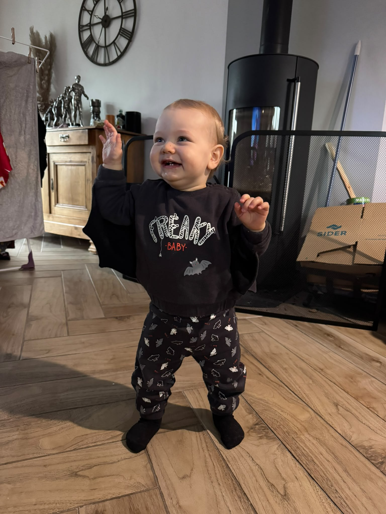
Pour Halloween, Abel déploie ses ailes de chauve-souris. Ce cliché ne montre pas la chute.
La Gazette a appris qu’Abel avait récemment fait une chute de plus d’un mètre. Le jeune aventurier a vite retrouvé son sourire : de quoi lui valoir, dans nos colonnes, le titre de petit cascadeur malgré lui. L’épisode tient ici en quelques lignes ; la vedette, elle, préfère déjà la suite.
Sur cette photo d’Halloween, les bras se lèvent comme deux ailes au-dessus d’un parquet devenu scène de théâtre. Une chauve-souris orne son pull, mais c’est le sourire qui prend son envol. Notre reporter cherchait un héros de la nuit ; Abel lui a offert une scène pleine de lumière.
Phénomène sonore
Une voix déjà remarquée
Selon Yoann, Abel a déjà de la voix. Pour un journal, il s’agit d’une information délicate à imprimer. Nous la consignons tout de même, faute de pouvoir joindre un enregistrement à chaque exemplaire.
À la maison, ce jeune correspondant possède déjà un moyen très efficace de signaler sa présence. La deuxième année apportera peut-être un vocabulaire plus précis ; la rédaction suivra l’affaire avec intérêt.
Même notre chouette messagère semble tendre l’oreille.
Chronique du temps qui passe
Douze mois, des images qui restent
Le 11 novembre 2025, Abel entre dans l’histoire de sa famille. Une photographie de février rassemble les quatre, une autre de mai le montre au bord de la mer, puis le portrait de juillet fixe son regard bleu. Ce ne sont que quelques étapes d’une année entière, mais elles suffisent à rappeler combien un petit visage change vite.
Cette édition garde ces instants sur papier. À la famille d’en écrire la suite.
Chroniques & correspondance 11 novembre 2026 · Page 5
Carnet de voyage · Courrier magique · Prévisions
Le monde s’ouvre à Abel
De la plage aux archives de famille, la première année donne déjà matière à une page bien remplie.
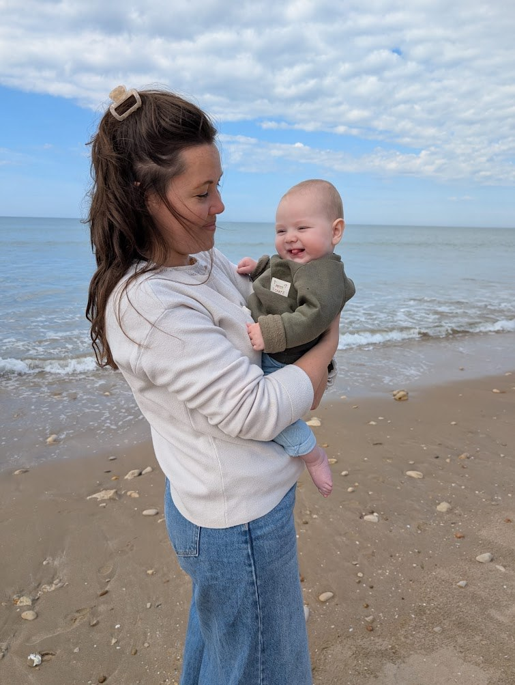
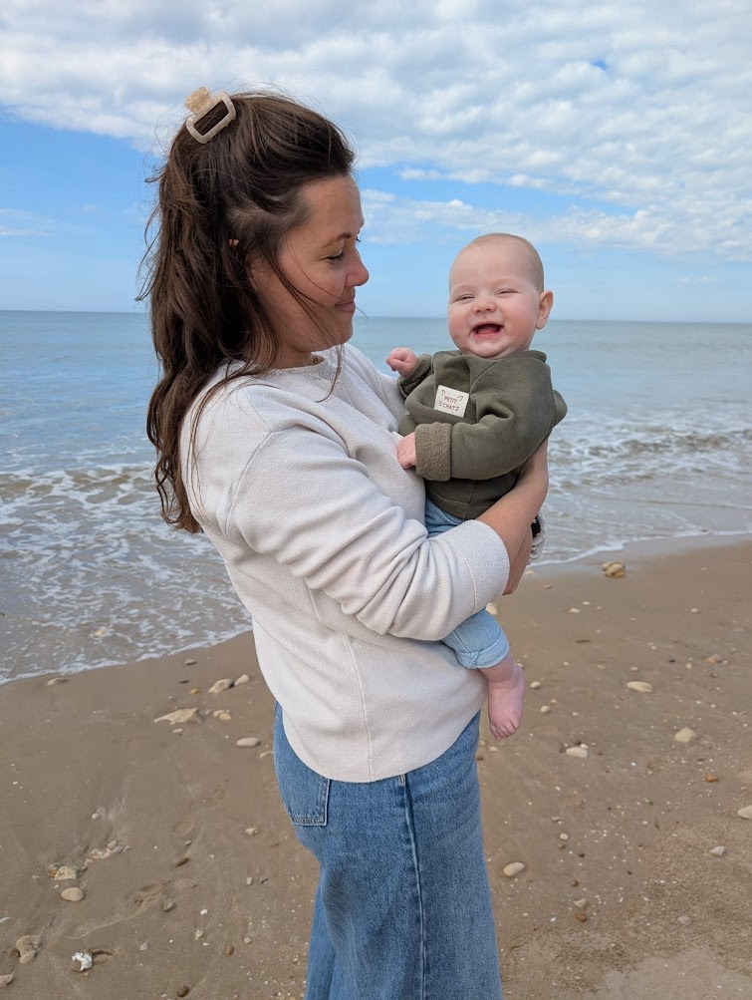
Photo mouvante : Marine et Abel au bord de la mer, mai 2026.Notre grande image animée
Un sourire au grand large
En mai 2026, Marine tient Abel face à la mer. Deux clichés presque consécutifs montrent le même instant sous deux expressions : d’abord un regard vers sa maman, puis un sourire offert à l’objectif. La version animée de cette Gazette fait passer l’un à l’autre.
Pas besoin de baguette pour ce petit tour : les images d’origine suffisent. Leur grain et leur trame ont été travaillés pour rejoindre l’encre et le papier de nos pages.
Deux photos, un instant qui bouge
Dans la version imprimée, le sourire d’Abel reste figé sur la page. Dans la version numérique, le souvenir reprend doucement vie.
Correspondance
Une piste à Londres
Un voyage à Londres, avec une visite des studios Harry Potter, précède l’arrivée d’Abel. La Gazette ne dispose d’aucune photographie de cette escapade. Elle préfère laisser planer un peu de mystère sur ce commencement.
Les parents, eux, connaissent certainement la version complète.
Portrait de famille
Tata Cindy au premier plan
Cindy au premier plan ; derrière elle, de gauche à droite : Damien, Marine, Julien et Yoann.
Cindy, maman de Justin et tata d’Abel et d’Élie, tient ici l’appareil. Elle occupe le premier plan, sourire grand ouvert. Derrière elle, Damien, Marine, Julien et Yoann complètent la scène. Une place bien visible pour celle qui fait aussi partie du cercle des garçons.
À conserver
La cousinade
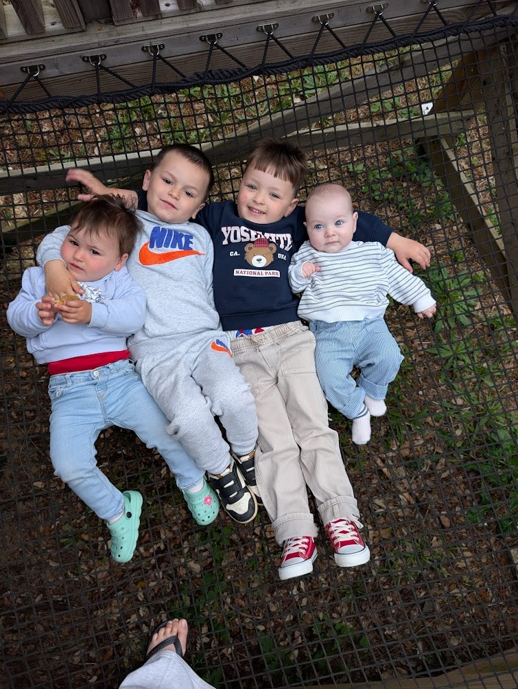
Faustine, Justin, Élie et Abel, de gauche à droite.
Les quatre enfants se sont retrouvés côte à côte sur un filet : Faustine, Justin, Élie et Abel. Le benjamin a déjà sa place dans cette cousinade. La Gazette conservera leur portrait : quatre enfants, et une histoire de famille qui grandit.
Prévisions très officieuses
La deuxième année
Notre sablier indique davantage de découvertes, de voix et de sourires. Il refuse toutefois de donner la moindre date précise : les aventures d’Abel se raconteront au fil des jours.
Une certitude seulement : la famille sera aux premières loges.
Avis de la rédaction
Joyeux anniversaire, Abel !
À Marine et Damien, cette Gazette offre onze pages de souvenirs et une promesse : continuer à regarder grandir ce petit garçon sans perdre la magie des détails.
La bande du filet ouvre la suite. Trois reportages suivent : Charlotte, puis Tristan avec Abel, enfin le premier cercle de Marine, Damien, Élie et Abel. Ils referment le numéro avant l’an deux.
The Daily Prophet · Avis très officieux · Édition familiale
Avis de recherche
La bande du filet
Quatre petits bandits. Un filet. Une famille sous le charme.
FaustineJustinÉlieAbel
Méfaits imaginaires : occupation du filet en bande organisée · sourires contagieux · tapage joyeux
Récompense : quatre câlins et un goûter à partager
Si vous les reconnaissez, prévenez leurs proches. Ils sauront quoi faire.
En fuite vers le goûter
Grand reportageÉdition anniversaireDeux portraits
Charlotte & Abel La marraine à la une
Portraits de famille · Édition spéciale
Charlotte, marraine au premier rang
De Beauxbâtons à la piscine, Abel retrouve les bras de sa marraine Charlotte.
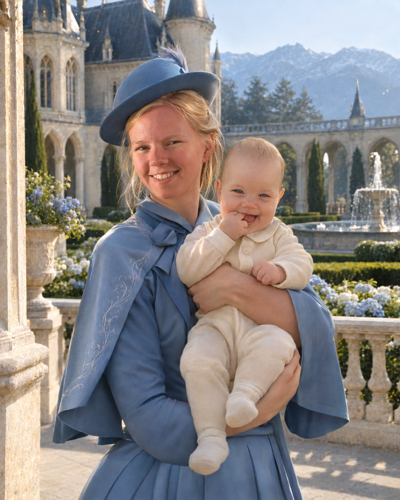
Charlotte et Abel devant les tours de Beauxbâtons.Charlotte et Abel dans la piscine. Date du cliché non précisée dans les archives.
Dans les jardins
Charlotte et son petit sorcier
Charlotte est la marraine d’Abel. Devant les tours de Beauxbâtons, elle tient son filleul dans les bras, tandis que les fontaines veillent sur le jardin.
Le jeune sorcier et sa marraine sourient dans notre grand portrait. À eux deux, ils attirent le regard bien avant les murs du château.
Carnet des proches
Au fil de l’eau
À la piscine, Charlotte tient Abel tout près d’elle. Son filleul sourit encore, cette fois au bord de l’eau.
Les archives ne donnent pas de date à cette scène. Elles gardent pourtant l’essentiel : une marraine, son filleul et un moment partagé.
Une marraine, un filleul, deux portraits à garder.
Le rectificatifÉdition anniversaireDeux pièces au dossier
Tristan & Abel Le parrain retrouvé
Après l’avis de recherche · Notre enquête
Tristan, le parrain derrière l’affiche
En page 3, l’avis de recherche lui donnait l’air redoutable. Deux clichés avec Abel racontent un parrain doux et attentionné.
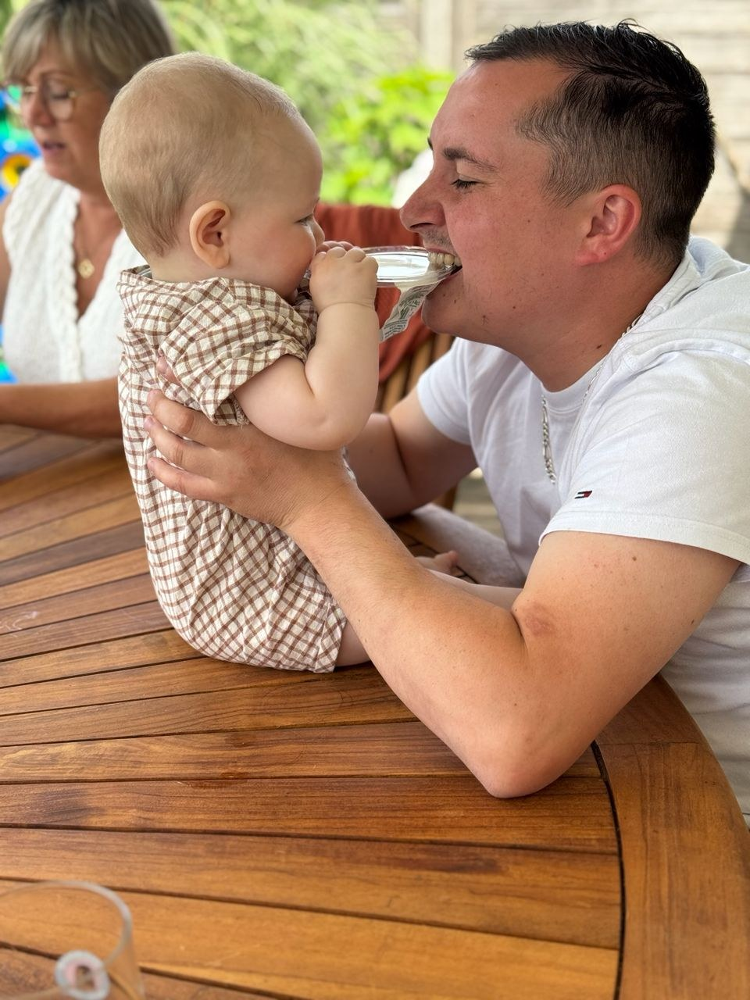
Tristan tient Abel à table ; les deux jouent avec un petit récipient. Date non confirmée.Un autre instant du même duo : Tristan regarde Abel avec attention.
Pièce numéro un
Un suspect qui sourit
Le portrait de l’avis de recherche imposait la prudence. À table avec Abel, Tristan présente un tout autre visage : il sourit, soutient son filleul et se prête à son jeu autour d’un petit récipient.
Le prétendu sorcier redoutable semble surtout soucieux de rester tout près du jeune Abel.
Pièce numéro deux
Le regard du parrain
Sur le second cliché, Abel est installé contre Tristan. Son parrain le tient d’une main et le regarde pendant que le petit examine ce qu’il a entre les doigts.
La Gazette corrige son dossier : derrière l’affiche sévère, il y a un parrain doux, présent et attentionné.
L’avis de recherche avait tort sur l’essentiel : Tristan veille sur Abel.
Grand reportageLe premier cercleQuatre visages
Marine · Damien Élie · Abel
Portrait de famille · Numéro anniversaire
Quatre noms, une histoire
Marine et Damien, Élie et Abel : au centre de cette édition, une famille qui s’agrandit et deux frères qui prennent leur place côte à côte.
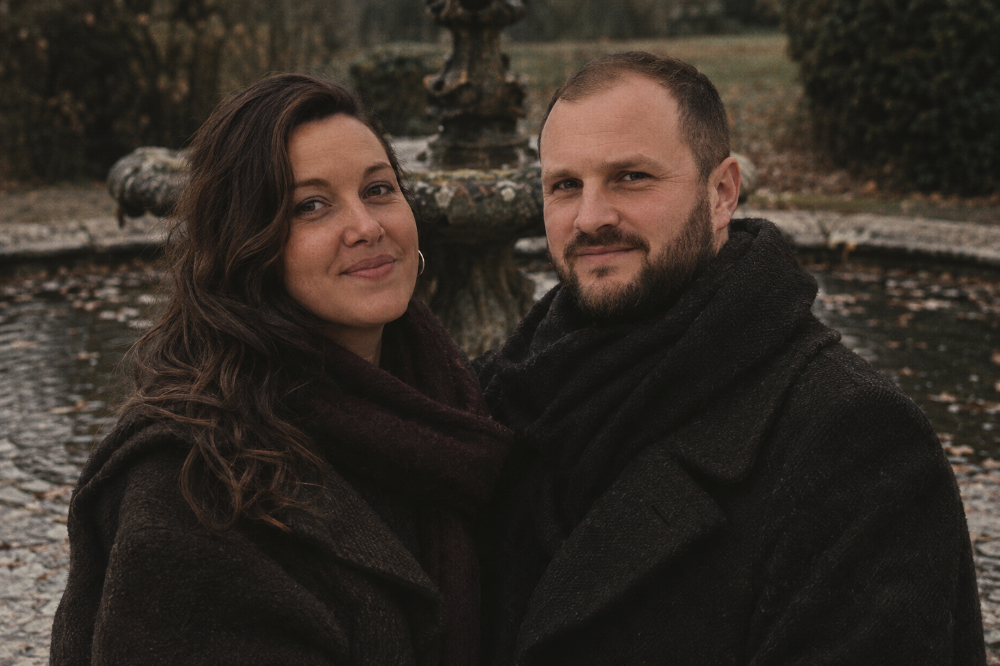
Marine et Damien, côte à côte devant la fontaine.Le duo des parents
Marine et Damien, au départ de tout
Le portrait les réunit devant la fontaine, serrés l’un contre l’autre. Dans ce dossier, Marine et Damien occupent une place évidente : ils sont les parents d’Élie et d’Abel, les deux garçons autour desquels tourne notre édition.
Le 11 novembre 2025, Abel arrive dans la famille. Élie devient grand frère. Un cliché de février 2026 les rassemble déjà tous les quatre : Marine tient le bébé, Damien est auprès d’Élie.
La Gazette a suivi leurs regards et leurs gestes sur ces images. Il n’en faut pas davantage pour raconter un premier cercle : deux parents, un aîné et le benjamin qui fête aujourd’hui son premier anniversaire.
Deux parents · deux frères · une histoire qui grandit
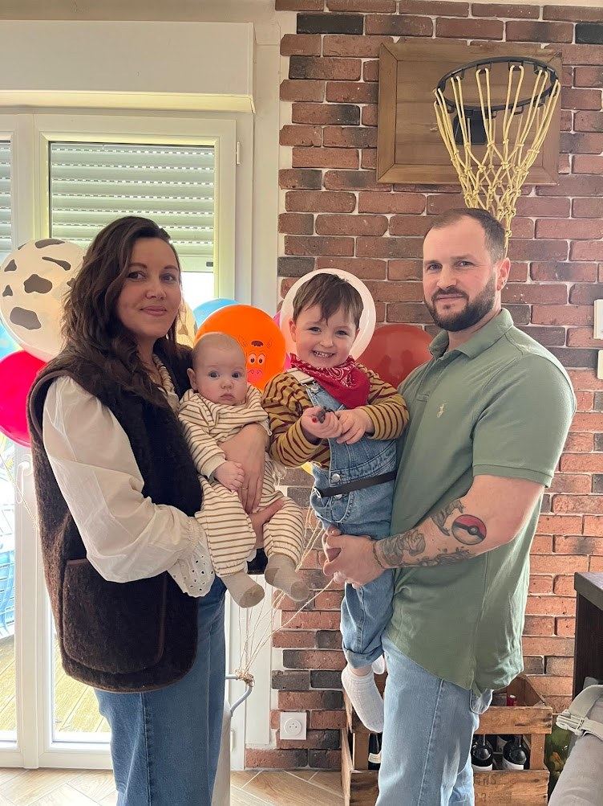
Marine, Abel, Élie et Damien réunis en février 2026.
Les quatre sur une image
La photographie de février garde un instant précieux : Abel encore nourrisson dans les bras de Marine, Élie souriant près de Damien. Chacun a sa place dans le cadre, sans que personne n’ait besoin de poser seul en héros.
La première année d’Abel s’inscrit ainsi dans une histoire déjà commencée à trois, désormais racontée à quatre.
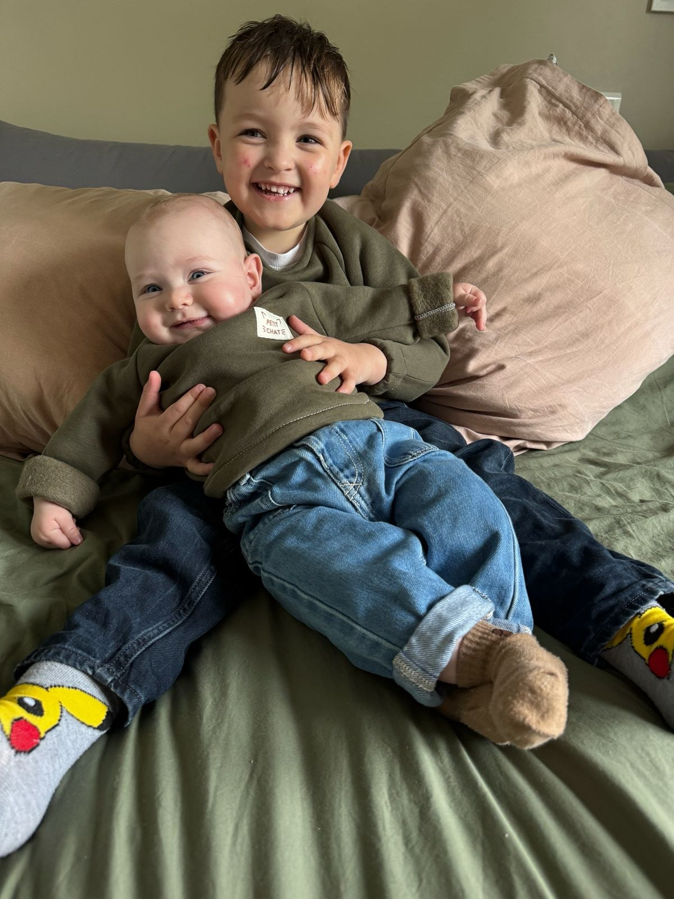
Élie tient Abel sur le canapé ; date de la scène non confirmée.
Élie, le grand frère
Sur le canapé, Élie tient Abel contre lui. L’aîné regarde l’objectif avec un large sourire ; son petit frère sourit lui aussi. Ce portrait à deux donne un visage au nouveau titre gagné par Élie depuis novembre 2025.
Abel grandira avec ce frère à ses côtés. Pour l’heure, la Gazette conserve ce moment partagé et souhaite au benjamin une première bougie entourée des siens.
Marine, Damien, Élie, Abel : quatre visages, et toute une année à garder.
Archives familialesLe registre des liens11 novembre 2026 · page 10
Une famille, plusieurs branches, un même petit sorcier
La tapisserie d’Abel
Une histoire de générations, de frères, de sœurs et de cousins — d’après les liens confirmés par la famille.
Réclame extraordinaireÉdition anniversaire11 novembre 2026 · page 11
Courrier des inventions Service des voyages
Ne perdez plus le nordEssayez-la aujourd’hui !
La Carte du Maraudeur
Une carte qui connaît les couloirs, les détours… et l’heure du goûter.
✦ La carte trouve toujours un passage ✦
La Carte du Maraudeur
Recalcul magique
Vous changez de destination ? La carte redessine le trajet. Des pas apparaissent sur le parchemin et vous guident jusqu’à l’arrivée. Aucun hibou requis.
Édition famille
Offre du jour
Accès illimité aux détours imaginaires. Une seule condition : ne pas perdre la carte avant le gâteau.